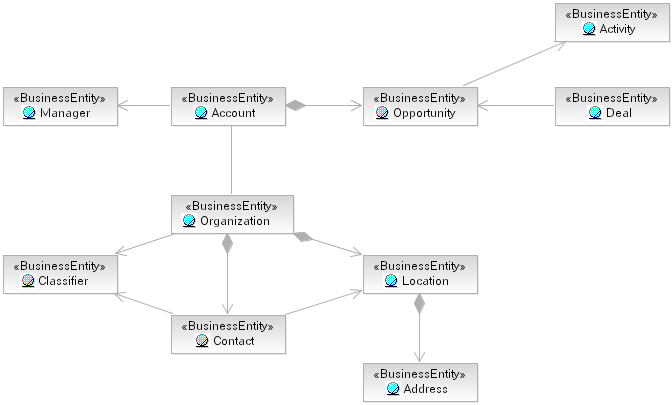
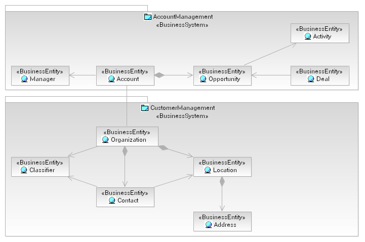
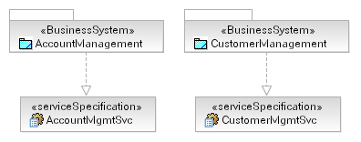

For most business-driven IT organizations, understanding and managing data in the form of complex Artifact: Business Entity(s) is key to the analysis and design of
solutions. As such, many solutions will include services that act as data-management services and the identification of
services will tend to focus more on the Artifact:
Data Model or Artifact: Business Analysis Model. In terms of application
reengineering to service-oriented solutions, data models have to be developed from the existing applications that can
be used to identify coherent subsets that can be treated as autonomous services.
Where possible the creation of an enterprise-wide domain model is an activity that has great value, the domain model is
a higher level of abstraction in general to a more complete logical data model (see Artifact:
Data Model) and so may be maintained more regularly. This domain model expresses the key concepts, in terms of Artifact: Business Entity, and can be considered to represent the key
artifact types managed by either a business component or business service (see Concept: Component Business Modeling). As such the logical grouping of a domain
model into a coherent set of dependent entities can be a starting point for service identification -- treating the
service as the owner of the entities. For example, consider the following domain model fragment.

We see that the domain model identifies a set of business entities that fall into two main business
competencies: account and customer management. It is true that there is a significant relationship between an
account and an organization; however, these two artifact types are most often dealt with separately and
operations tend to be carried out at either the account or organization level. We may then assign the relevant
portions of the domain model to a RUP Artifact: Business System (Business Component in CBM) as shown
below.

While this gives us a clear picture in terms of the ownership of the relevant artifact types we need to go one step
further and identify the services that the business system provides to the organization, and in this case specifically
the service provided to manage the identified artifact types. So, given the example we have we would identify the
entity "Account" as the primary artifact owned by the "Account Management" Business System, and "Customer" as the
primary artifact owned by the "Customer Management" system. Thus, we would provide a service that enables the access
to, and update of, these entities as shown in the figure below.

Again, these service specifications only represent candidate services (see the status property of the Artifact: Service Specification) and as such would need to be refined
with details of the operations they provide, specifically operations that allow for the update of entities.
|